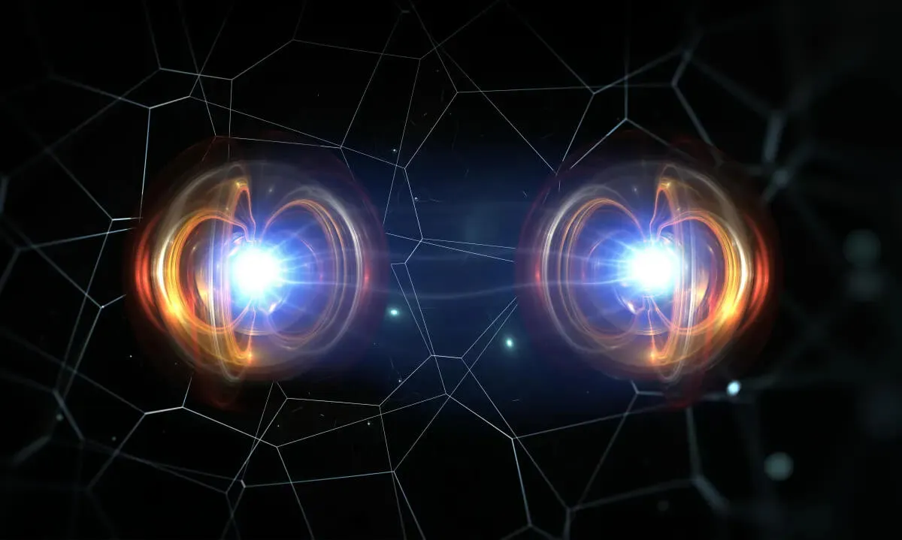

O Horizonte Quântico
Estamos apenas no início da revolução quântica. O futuro reserva computadores quânticos tolerantes a falhas, a internet quântica e a solução de problemas científicos que hoje sequer ousamos imaginar. A colaboração global entre pesquisa e indústria está acelerando essa jornada rumo a um novo paradigma tecnológico.
